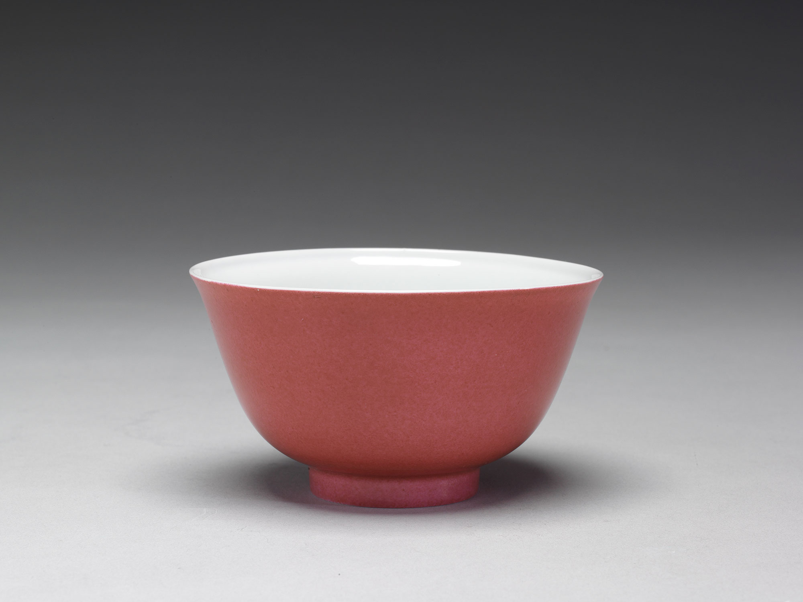
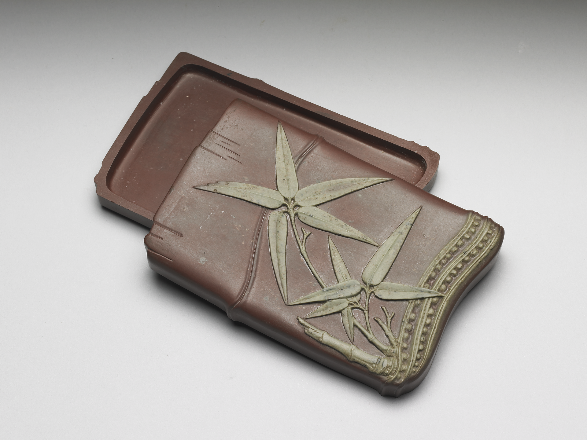
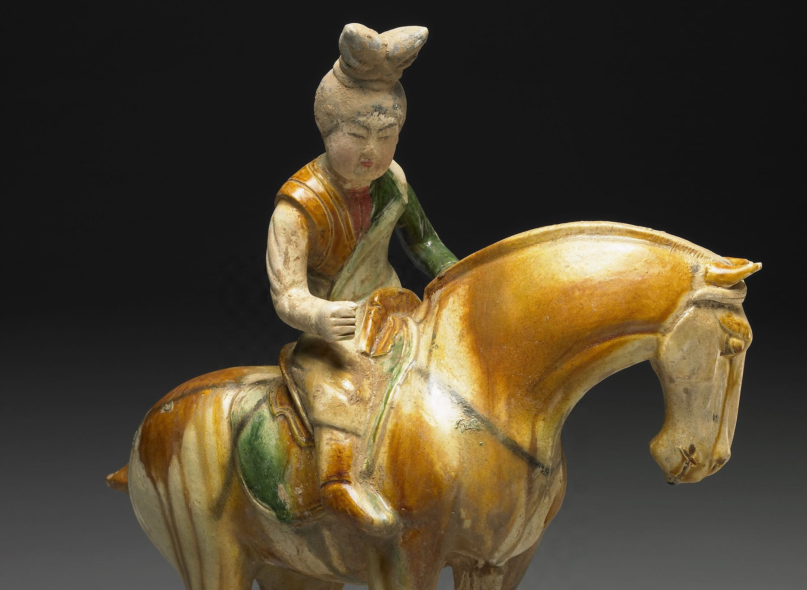
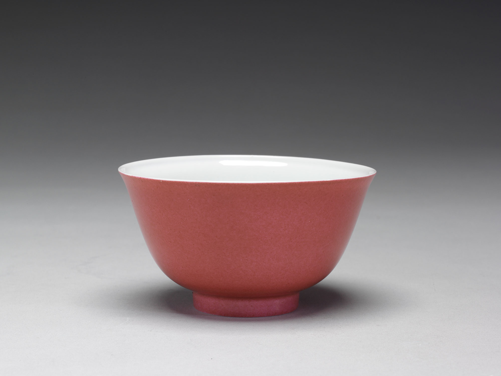
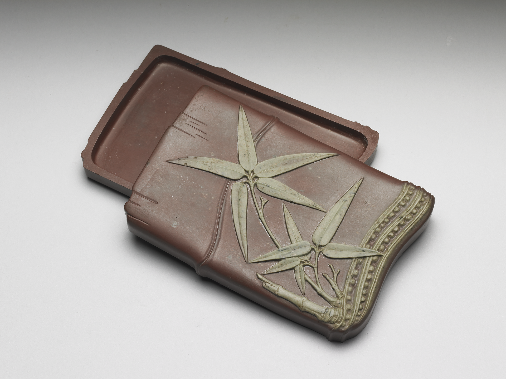
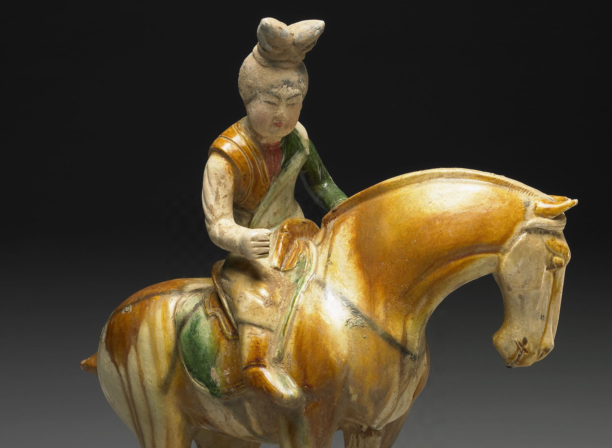

The Five Intermediary Colors (五間色, wǔ jiànsè) were derived by blending the Five Standard Colors (五正色), creating a harmonious spectrum that reflected balance in nature and society. These hues were often used in clothing, art, and ceremonies, especially during the Tang Dynasty (618–907 CE), when layered dyeing techniques flourished.
- Green (綠, lǜ)
- Blend of: Blue-Green (青) and Yellow (黃)
- Meaning: Growth, renewal, and harmony. Green symbolized nature and was commonly used in art.
- Aquamarine (碧, bì)
- Blend of: White (白) and Blue-Green (青)
- Meaning: Depth, wisdom, and stability. Aquamarine was often used in jade carvings and textiles.
- Light Red (紅, hóng)
- Blend of: Red (赤) and White (白)
- Meaning: Softness, beauty, and femininity. Light red was often used in cosmetics and textiles.
- Purple (紫, zǐ)
- Blend of: Black (黑) and Red (赤)*
- Symbolism: Nobility and cosmic harmony. By the Tang Dynasty, purple (zǐ) surpassed red as the highest-status color, worn by top officials and Daoist immortals.
- Brown (流黃 liú huáng)
- Blend of: Yellow (黃) and Black (黑)
- Meaning: Royalty, power, and prosperity. This hue was frequently used in imperial garments.
*Note: The blending of black and red to create purple is a later interpretation, as traditional Chinese color theory did not explicitly include purple as a standard color. While zǐ (purple) was technically outside the "standard" system, it became culturally prominent as a blend of red and black (or blue).

 





Picture source: National Palace Museum, Taipei